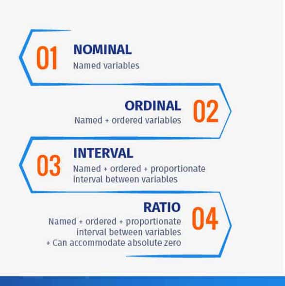
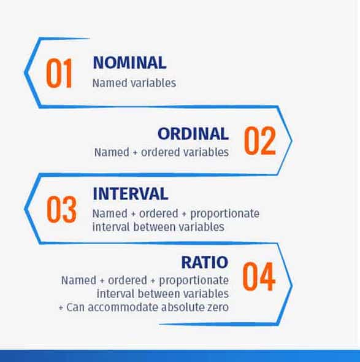

Shapes of Distributions
Symmetry A distribution is considered symmetric if it looks the same on both sides of its center point. In other words, if you were to fold a symmetric distribution in half, the two halves would match up. The classic example of a symmetric distribution is the normal distribution, also known as the bell curve.
Skewness A distribution is considered skewed if it is not symmetric and its shape depends on the direction of the skewness. A distribution is considered positively skewed if the tail on the right side is longer or fatter than the tail on the left side. A distribution is considered negatively skewed if the tail on the left side is longer or fatter than the tail on the right side.
Kurtosis Kurtosis is a measure of whether the data are heavy-tailed or light-tailed relative to a normal distribution. That is, data sets with high kurtosis tend to have heavy tails, or outliers. Data sets with low kurtosis tend to have light tails, or lack of outliers. A uniform distribution would be the extreme case.
Modality Modality refers to the number of peaks or modes in a distribution. Distributions can be unimodal (having one peak), bimodal (having two peaks), trimodal (having three peaks), or multimodal (having more than three peaks). Modality provides insights into the underlying structure of the data and can indicate whether there are distinct subpopulations or patterns.
 
